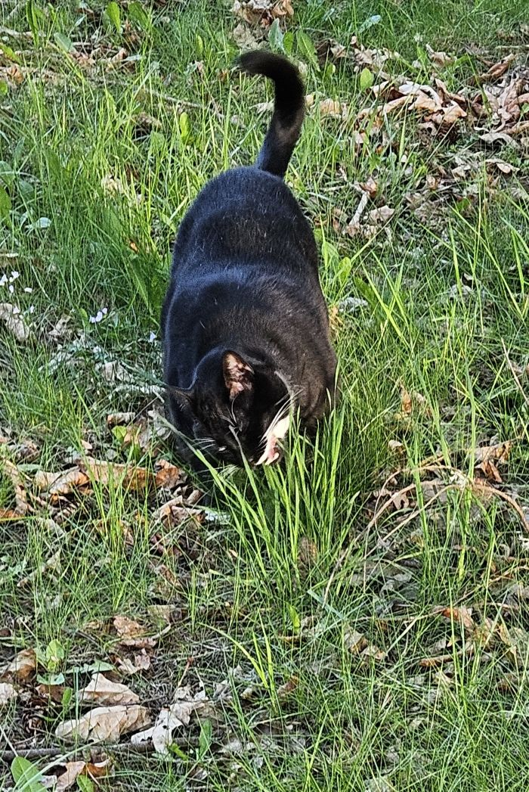

Berto, also known as Michiberto (because in Mexico we call cats michis), is a BIG, very gordito, extremely fluffy creature of pure chaos. He is not small, not delicate, and definitely not normal. One minute he’s a cow, aggressively eating grass like he pays rent on a farm, and the next minute he transforms into a panda, throwing himself on the floor and doing wild, dramatic panda rolls for no reason. His round belly jiggles with every move, adding extra comedy to his already ridiculous behavior. He lives in his own world where he can be any animal he wants, and honestly, no one can stop him. Michiberto isn’t just a cat—he’s a whole personality, a legend, and a daily source of confusion and laughter
Here is a picture of Berto thinking he is a cow eating grass
